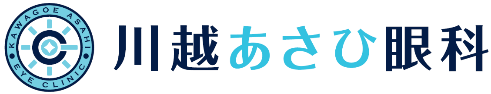

眼軸長 経過レポート

※ 背景の帯は日本人小児の眼軸長パーセンタイル成長曲線（10〜90パーセンタイル）です。「標準的な伸びの目安」は、治療開始時（なければ初回）の眼軸長から、標準（50パーセンタイル）と同じ速さで伸びた場合の線です。パーセンタイルは曲線からの推定値です。眼軸長には測定ごとに±0.05〜0.1mm程度の誤差があるため、半年以上の経過で判断します。治療効果の最終的な判定は診察で総合的に行います。
← 入力に戻る
A4で印刷